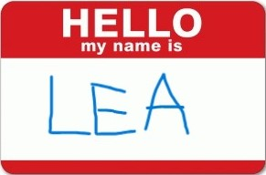

Why Statistics?
ReTune Fall School
17th of October, 2025
Welcome!
Hello!
Who are you?
What is your background?
Do you have experience with data analysis?
What’s your attitude towards statistics? Statistical confessions?

What to expect today?
Slides can be found here: https://hillea.github.io/BasicStats-Retune/
Textbooks this workshop is based on/that can be used to read up:
Schedule
| Time | Topic |
|---|---|
| 9:00 - 9:20 | Intro: Why Statistics? |
| 9:20 - 9:40 | Getting started with Jamovi |
| 10 | Descriptive Statistics & Data Visualization |
| Probability & Sampling | |
| Hypothesis Testing |
True or False?
“People who write with their left hand live on average 9 years less than right-handers.”
- False!
“Shark attacks kill more people each year than lightning strikes.”
- False
“Chocolate accelerates weight loss”
- Well… false
Why Statistics?
Why is it important that YOU know statistics?
You’re doing a PhD!
We live in an increasingly data-centric world
Facts & data literacy matter more than ever!
- You should be able to call bullshit (https://www.callingbullshit.org/)
What can Statistics Do For Us?
Describe patterns by summarizing/breaking down data (“descriptive statistics”)
Decide whether one thing is better than another, given the uncertainty (“inferential statistics”)
Predict how other people would “behave” (generalize to new observations)
What are Data?
- What do you think are data?
qualitative vs. quantitative
qualitative?
- open questions, descriptions… can potentially be coded into categories
quantitative?
- numeric, can be averaged etc.
What are Data? (2)
Data types
character/string: text (qualitative)
factors/categories
types of numbers (quantitative)
binary: 0 or 1, TRUE or FALSE (logical)
integers: whole numbers
real numbers: decimals/fractions
discrete vs. continuous
discrete: finite set of particular values (0 or 1, scale from 1 to 10)
continuous: real numbers that fall into particular range (e.g., brain activity, visual analoge scale)
What data type is eye color?
What is a Data Set?
a collection of data
usually organized into rows and columns (like an excel spreadsheet)
rows: participants/animals/cells…
columns: variables!
- each variable contains one type of measurement
table cells = unique observations of variables per participant etc.

NHANES dataset
What Makes a Good Measurement?
What is being measured?
constructs vs. proxies: need to be well-defined! (Difficult)
measurement error
random: e.g., variation in reaction times of same participant across trials
systematic: e.g., miscalibrated eye-tracking device
Do we have a “gold standard” to compare the measurement to?
Reliability & Validity
Data that we collected should be both:
reliable: stable and consistent over time
valid: measuring the construct we’re interested in
Reliability & Validity
Summarizing Data
Throwing away (some of the) information!
extract the quintessence of the data (important for forming models)
make predictions
Counts, frequencies, percentages, averages
End of 1st part
Learning objectives:
Why is statistics important?
What are data?
What is reliability and validity?
Next:
- Getting started with Jamovi